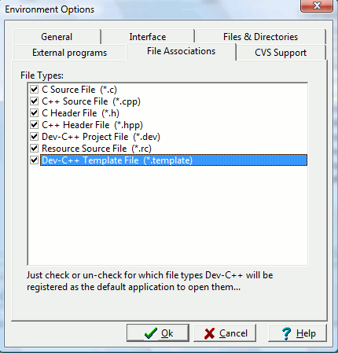

Here, you can select one or more file types which the IDE will associate itself with, so that the next time you open an associated file in Windows Explorer, wxDev-C++ will be opened up automatically and load that file.
